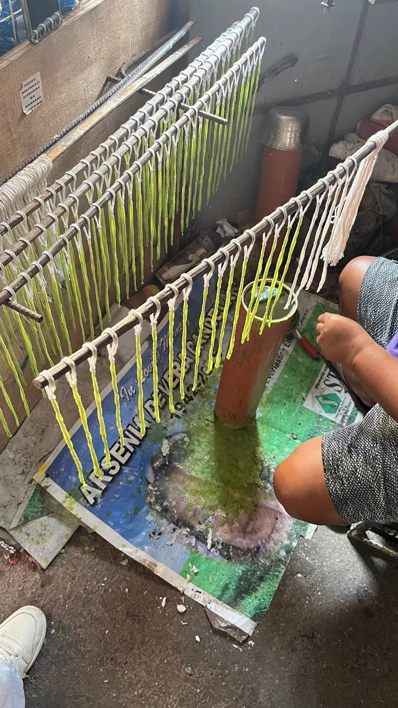

Danas

Ang mga gumagawa ng kandila sa Daet, Camarines Norte ay nagsimula sa kanilang hanapbuhay sa murang edad, tinuruan ng kanilang magulang at lumaki sa pagmamasid sa proseso ng paggawa. Sa paglipas ng panahon, natutunan nila ang bawat hakbang sa paggawa ng kandila at ngayon ay sila na rin ang nagtuturo sa kanilang mga anak upang maipagpatuloy ang tradisyon. Sa kasalukuyan, ang kanilang mga anak ang katuwang sa paghahanda ng wax, paghulma, pagbalot, at paminsan-minsan ay sa pakikipag-ugnayan sa mga suki. Ipinapakita nito ang kahalagahan ng pagpasa ng kaalaman sa pamilya at ang pagpapatuloy ng tradisyunal na hanapbuhay sa pamamagitan ng pagtutulungan ng henerasyon.
Ang paggawa ng kandila ay malaking tulong sa pang-araw-araw na pamumuhay ng pamilya. Sa panahon ng Mahal na Araw at Undas, tumataas ang kita, habang sa karaniwang araw, sapat na para sa pangangailangan ng pamilya. Ang hamon ng kaunting mamimili o masamang panahon ay hinaharap sa pamamagitan ng pagtitipid at maingat na paggamit ng mga materyales. Ipinapakita nito na ang hanapbuhay sa paggawa ng kandila ay nakasalalay sa kasipagan, maayos na proseso, at disiplina.
Gawi

Ang pang-araw-araw na gawain ay kinabibilangan ng paggawa, paghahanda ng wax at mitsa, paghulma, pagbalot, at pag-display ng kandila sa labas upang makita ng mga kliyente. May kinagawian din silang pagdarasal bago at matapos ang paggawa upang maging maayos ang bawat kandila at makabenta ng maayos Bago ibenta ang produkto, inihahanda nila ang bawat kandila sa pamamagitan ng tamang timpla ng wax, maayos na mitsa, at wastong hugis. Mahalaga ang pagbibigay oras sa bawat kandila upang maging maayos at maganda, at upang mapanatili ang tiwala ng mga suki. Ang bawat hakbang, mula sa paggawa hanggang sa pag-display ng kandila sa labas, ay nangangailangan ng maingat at maayos na proseso upang maiwasan ang pinsala at masayang produkto. Ang pang-araw-araw na gawain ay nagpapakita ng dedikasyon sa kalidad ng produkto at respeto sa tradisyon ng paggawa ng kandila.
Paniniwala
.jpg)
Sa paggawa ng kandila, ang pangunahing layunin ng mga gumagawa ay hindi lamang kumita kundi magbigay ng produkto na may kalidad at maayos ang pagkakagawa. Kasama sa proseso ang paniniwala at pagdarasal para sa maayos na kita at kalakalan, na nagiging bahagi ng kanilang tradisyonal na paraan ng paggawa. Bukod dito, binibigyang pansin ang bawat detalye, mula sa pagpili ng waks, paghalo ng mga sangkap, hanggang sa pagtatapos ng produkto, upang masiguro na ang bawat kandila ay maayos at matibay. Ang ganitong pagsisikap ay nagpapakita na ang hanapbuhay ay nangangailangan ng disiplina, tiyaga, at dedikasyon sa paggawa.
Mahalaga rin ang kulay ng kandila sa ilang mamimili dahil ito ay may kahulugan ayon sa nais na layunin o paniniwala. Halimbawa, dilaw ang madalas na pinipili para sa mga estudyante bilang simbolo ng karunungan, puti para sa mga panalangin para sa kaluluwa, pink para sa pag-ibig, at pula para sa iba pang personal na layunin. Bagaman may epekto ang kulay sa benta, nananatiling pangunahing pokus ang kalidad ng produkto at maayos na proseso sa paggawa. Ipinapakita nito na sa kabila ng pamahiin at simbolismo, ang tunay na tagumpay sa hanapbuhay ay nakasalalay sa mahusay na paggawa at integridad ng produkto.
Pamahiin

Ang tanging pamahiin sa paggawa ng kandila ay ang pagdarasal bago at matapos ang bawat hakbang ng trabaho. Layunin nito na maging maayos ang bawat proseso at makabenta ng maayos, kahit na wala namang direktang epekto sa kabuhayan. Sinusunod ng mga gumagawa ang pamahiing ito bilang bahagi ng kanilang tradisyon at paniniwala, na nagbibigay ng kapanatagan at inspirasyon habang gumagawa. Bagamat ito ay pamahiin, nagiging positibong bahagi ito ng kanilang routine sapagkat nakakatulong ito sa konsentrasyon at maayos na daloy ng paggawa.
Sa kabila ng tradisyonal na paniniwalang ito, malinaw na ang tunay na tagumpay sa hanapbuhay ay nakasalalay sa kasipagan, tiyaga, at kalidad ng paggawa. Ang pamahiin ay simbolo lamang ng pag-asa at gabay, hindi isang hadlang sa produktibo o praktikal na pamumuhay. Ipinapakita nito na ang mga tradisyon at paniniwala ay maaaring maging bahagi ng kultura at moral support, ngunit ang maayos na resulta at kita ay bunga ng dedikasyon at mahusay na pamamahala sa bawat yugto ng paggawa ng kandila.